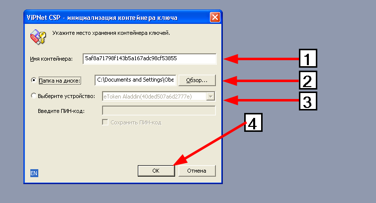
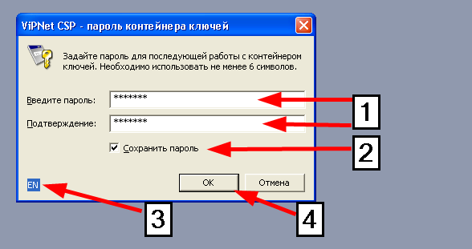
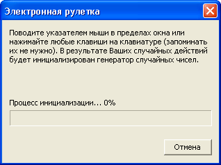
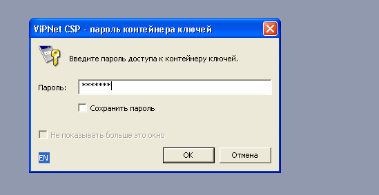

The cryptographic service provider ViPNet CPS is ready for the procedure of closed signature key container generation. The closed key will be used to encrypt your data when the reporting documents are passed via protected connection channels.
After this, the query to create the signature key certificate will be used.
Creation of the closed key container
During creation of the closed key container you will see the dialog box of the cryptographic service provider containing the following settings: name of the container and storage location of the container (picture 1.).

Picture 1.
You may either agree with initial settings of the container name and the storage location or change them.
It is recommended to leave default values.
After pressing the button "OK", the password input window will appear for access restriction to the closed key container (picture 2).

Picture 2.
Before entering the password, you must check the input language (picture 2.,3), whether the button "CapsLock" is active. The minimum length of the password is 6 symbols. It is not recommended to set up simple passwords (picture 2., 1). It is recommended to write or to save the entered password somewhere because if you forget the password you will not be able to use the digital signature to sign and to encrypt. You may set up the checkmark "Save password" (picture 2., 2). It is convenient because:
· The password will be used even if lost.
· You will not be required to enter the password on intermediate stages of the certificate query generation and installation of the certification to the closed key container.
Disadvantages of saving the password:
· An unauthorised user may use the digital signature.
· The chance to discredit the key increases.
After entering the password and its confirmation press the button "OK" (picture 2., 4) and you will pass to generation of the closed key container. You will see the window "Electronic roulette" (picture 3.)

Picture 3.
This window generates the random closed key based on the user activity. To generate the signature closed key, move the cursor of the mouse within the window of the "Electronic roulette" or press various buttons on the keyboard until the initialisation indicator will be 100%.
If the container has been generated, its location will be shown in the window "Service messages" of 1C platform. The message will have the type"A new container is generated:C:\Documents and Settings\ВасяПупкин\Local Settings\Application Data\Infotecs\Containers\01bdbaa4eb3149d4b82166c0620963b2:.8F2F5C70C2E3D536».
If the checkpoint "Save password" was not ticked beforehand, the window requesting input of the container's password will appear (picture 4.)

Picture 4.
If the query to the certificate has been successful, the query will be attempted to be sent after input of the password.
When the response is got from the server ("Update query statuses (get the response from the server)"), you may also need to enter the password for the key container.
· To the window "Service messages";
· As windows with messages to the user.
· In the field "Comments" of the query table.